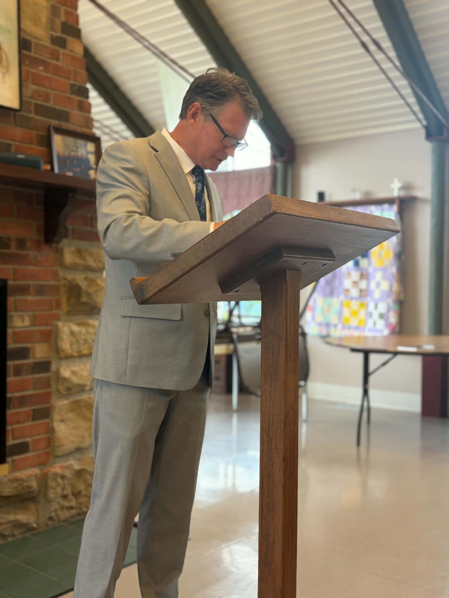
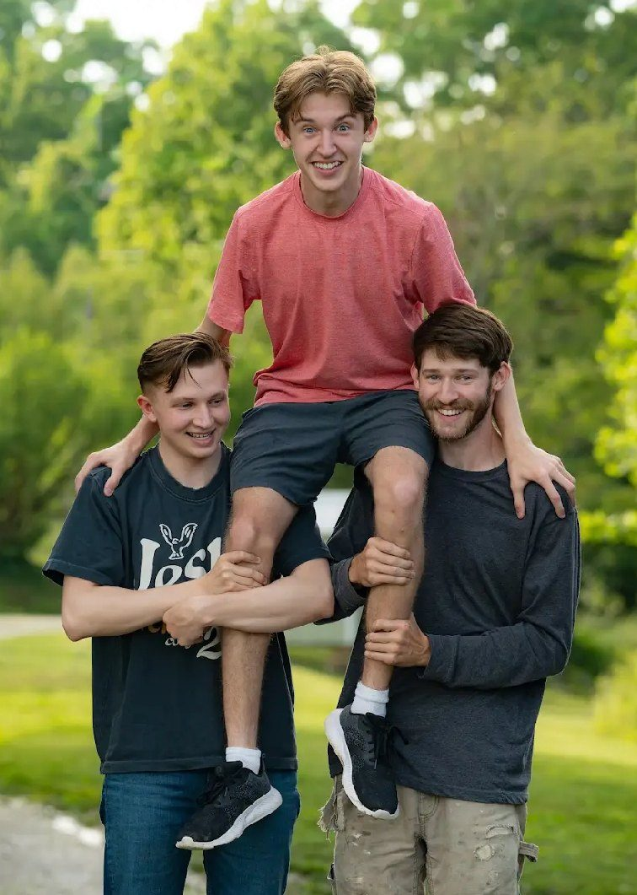

Leadership
Meet Pastors Will & Stephanie Stephens
Pastors Will and Stephanie Stephens are honored to answer God's call by planting New Life Family Church in Campton, Kentucky.

Pastor Will Stephens- Pastors, New Life Family Church
- Will: 30+ years serving in ministry
- Stephanie: nursery, media & church office ministry since 1999
- Married since 2002, parents of three sons
- Wolfe County home, Eastern Kentucky at heart
Their story
A heart for serving God and His people
Pastors Will and Stephanie Stephens have a heart for serving God and His people. Married in 2002 and blessed with three wonderful sons, they are committed to helping people experience the love of Jesus, grow in their faith, and find a place to belong.
Born and raised in Wolfe County, Pastor Will has a deep love for the people and communities of Eastern Kentucky. As someone who has spent his entire life in the area, he understands both the joys and the challenges of small-town life and considers it a privilege to serve the community he has always called home.
For more than 30 years, Pastor Will has faithfully served in ministry. Long before becoming a lead pastor, he learned the value of serving wherever God opened a door. Over the years, he has ministered as a personal assistant, children's ministry leader, youth pastor, and in church administration.
Pastor Stephanie accepted Christ as her Savior as a young child, and her walk with the Lord has been the foundation of her life ever since. In 1999, her mom and stepdad founded a church where she had the privilege of serving in many areas of ministry, including the nursery, media ministry, and the church office. Those years taught her the importance of faithfulness and the value of the ministry of helps.
Throughout their marriage, Will and Stephanie have continued serving together wherever God has called them, believing that every role in the body of Christ is significant. Their greatest passion is seeing lives transformed by the Gospel. They believe church should be a place where everyone is welcomed, families are strengthened, faith is nurtured, and people discover the hope and purpose that can only be found in Jesus Christ. Pastor Will's preaching is grounded in God's Word, practical for everyday life, and centered on God's grace, truth, and the power of the Holy Spirit.
Today, they are honored to answer God's call by planting a church in Campton, Kentucky. Their desire is to share the love of Jesus, teach the truth of God's Word, and build a church where every person is loved, every family is valued, and everyone has the opportunity to encounter God in a real and life-changing way. They are grateful for all God has done and look forward to what He will continue to do in our community.
Whether you're exploring faith for the first time or looking for a church to call home, Pastors Will and Stephanie and the New Life Family Church family look forward to welcoming you.
Church should be a place where everyone is welcomed, families are strengthened, and faith is nurtured.
Pastors Will & Stephanie Stephens

Luke, Jon & Nic- Luke — Maintenance Department & Usher
- Jon — Media & Youth Ministry
- Nic — Media, Greeter & Usher
Serving together
Luke, Jon & Nic
Luke, Jon, and Nic have been a part of ministry for as long as they can remember — really, since they could walk!
Growing up in the church, they learned early that ministry isn't just about standing in a pulpit or holding a microphone. Sometimes ministry means cleaning, carrying, building, fixing, setting up, tearing down, and simply doing whatever needs to be done.
Over the years, these three have probably cleaned, carried, built, repaired, and helped with just about anything you could think of around the church. They have learned the value of serving others and understand that every job, big or small, plays an important part in the life of the church.
Today, each of them continues to serve in their own unique way.
- Luke serves in the Maintenance Department and as an Usher, helping take care of the church and making sure people feel welcomed and cared for when they come through the doors.
- Jon serves in Media, helping behind the scenes to make ministry happen. He is currently in his third year of Bible college at World Harvest Bible School in Murrieta, CA, and when he's home he enjoys helping with the Youth Ministry, investing in the next generation.
- Nic helps Jon in Media and serves as a Greeter and Usher, welcoming people with a smile and making sure everyone who walks through the doors feels at home.
These three are a wonderful example of what it means to have a servant's heart. Their willingness to work, help, and serve wherever needed has been built into them from an early age. They understand that serving God's house is a privilege, and they continue to give their time, talents, and energy to help make New Life Family Church a place where people can find hope, family, and a new beginning.